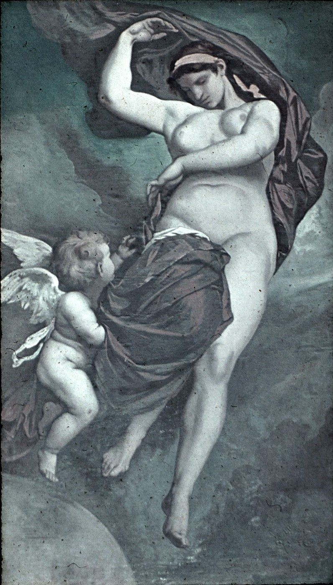

The Earth; mother of the Titans, the Giants, and much of the ancient world

Anselm Feuerbach, Gaea, 1875 — Bayerische Staatsgemäldesammlungen, Munich
Gaia is one of the first beings to emerge from Chaos — not born, not made, but simply present as the earth is present: as a condition of existence. She is the ground on which all mythology happens, literally and figuratively.
What makes Gaia distinctive in the creation cycle is that she is always the architect of change, but never through direct action. She endures, she conspires, she advises — and then someone else carries out her plan. It was Gaia who proposed the castration of Uranus, and Gaia who armed Cronus with the sickle. It was Gaia who told Rhea how to save Zeus. Later, it would be Gaia who advised Zeus during the Titanomachy.
She is the most patient character in Greek mythology, and also the most dangerous. Her patience is not passivity — it is the patience of something that cannot be destroyed, only provoked.
Her relationship to prophecy is central. She knows what will happen, or at least what tends to happen, because she has been there before. Her counsel is always accurate. The gods who ignore it are always destroyed by the thing they tried to prevent.